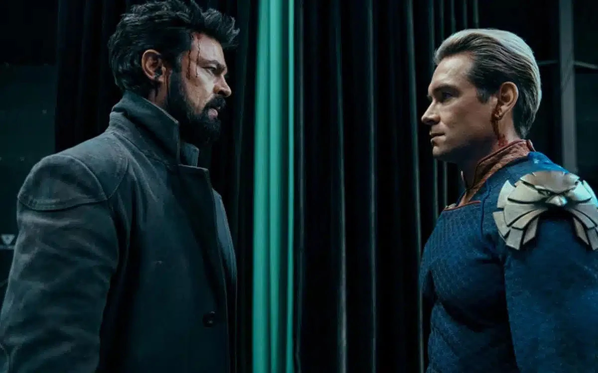

Amazon Prime Video renova "The Boys" para a quinta temporada
Sem esperar pela estreia da quarta temporada, a Amazon Prime Video confirmou que "The Boys" está para durar.
Durante uma apresentação à comunicação social esta terça-feira em Nova Iorque, a plataforma anunciou a renovação da série sobre os super-heróis subversivos para a quinta temporada.
“'The Boys' é uma série descarada e ousada que continua a cativar os nossos clientes em todo o mundo ao perfurar o tecido cultural temporada após temporada”, destaca o comunicado oficial, citando Vernon Sanders, o principal responsável pela área de TV da Amazon MGM Studios.
“Estamos orgulhosos desta série que se tornou uma saga global e estamos entusiasmados por Eric Kripke e a equipa criativa terem mais histórias envolventes para contar a todos os leais fãs", acrescentou.
A quarta temporada de "The Boys" chega a 13 de junho com a estreia em simultâneo de três episódios, com os restantes a serem lançados aao rimo de um por semana até ao final a 18 de julho.
Ler Mais
.webp)
"Megalopolis", com Adam Driver: Coppola revela novo trailer do seu "melhor trabalho"
O nosso novo filme 'Megalopolis' é o melhor trabalho que já tive o privilégio de presidir" é a descrição que Francis Ford Coppola associa à divulgação de um novo e ousado trailer no dia de abertura do festival de Cannes.
Aos 85 anos, Coppola chega ao festival de cinema mais importante do mundo como candidato à terceira Palma de Ouro da carreira, 50 anos depois de "O Vigilante" e 45 de "Apocalypse Now", com um filme sobre um arquiteto sonhador e ambicioso (Adam Driver), símbolo do seu próprio excesso no cinema: um orçamento de pelo menos 120 milhões de dólares, financiado pela venda de parte das suas propriedades.
A antestreia mundial de gala está marcada para o final da tarde de quinta-feira, 16 de maio.
Ainda a aguardar confirmação de distribuição em Portugal, o filme independente já foi comprado para distribuição na Grã-Bretanha, Espanha, França, Itália, Alemanha e países que usem essa língua, como Suíça e Áustria.
Ler Mais

"O Senhor dos Anéis: Os Anéis de Poder" já tem data de estreia. Veja o trailer da segunda temporada
O Senhor dos Anéis: Os Anéis de Poder" está de volta à Amazon Prime Video.
Um sombrio trailer que destaca a ascensão de Sauron (papel de Charlie Vickers) foi divulgado esta terça-feira, bem como a data de estreia da segunda temporada: 29 de agosto.
“Na segunda temporada de Os Anéis do Poder, Sauron regressa. Expulso por Galadriel, sem exército nem aliados, o Senhor das Trevas em ascensão conta agora apenas com a sua própria inteligência para reconstruir o seu poder e supervisionar a criação dos Anéis do Poder, que lhe permitirão submeter todos os povos da Terra Média à sua sinistra vontade", destaca a sinopse oficial divulgada pela plataforma.
E acrescenta: "Com base na jornada épica e na ambição da primeira temporada, a nova temporada mergulha até os seus personagens mais queridos e vulneráveis numa maré crescente de escuridão, desafiando cada um a encontrar o seu lugar num mundo que está cada vez mais à beira da desgraça. Elfos e anões, orcs e homens, feiticeiros e muito mais... à medida que as amizades começam a deformar-se e os reinos a fraturar-se, as forças do bem lutarão ainda mais corajosamente para preservar o que é mais importante para a maioria deles... eles próprios e os seus entes queridos".
Ler Mais